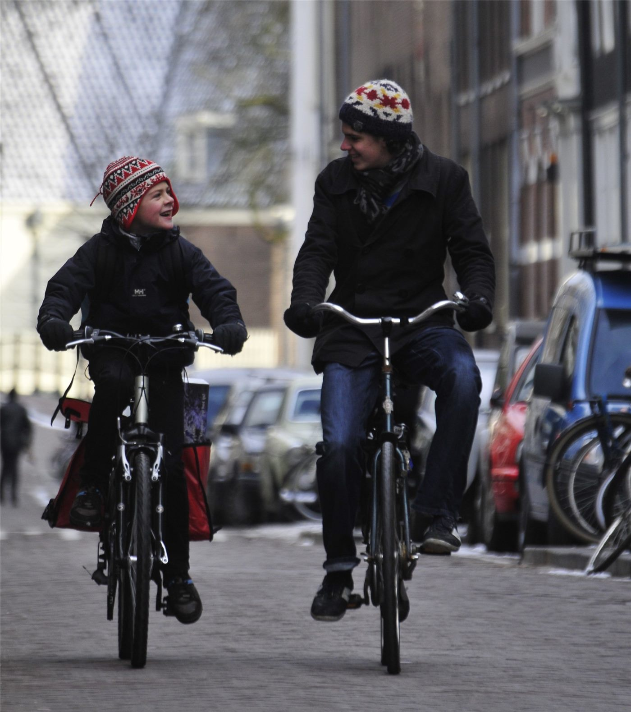

계단 내려갈 때 찌릿한 무릎… 관절을 지키는 하체 습관
계단을 내려갈 때 무릎 앞쪽이 시큰거린다면 관절 주변 근육이 힘을 나눠 받지 못하고 있다는 신호일 수 있다. 통증 없이 할 수 있는 하체 운동이 우선 권장된다.
조계현 기자 · 2026.09.03
橋사회

계단을 내려가거나 앉았다 일어설 때 무릎 앞쪽에 찌릿한 통증이 생기는 경우가 있다. 내리막에서 무릎에 실리는 힘은 평지 보행보다 훨씬 크기 때문에, 주변 근육이 충격을 나눠 받지 못하면 통증이 먼저 나타난다.
광고 문의 · 300×250이런 통증은 나이와 무관하게 발생한다. 앉아 있는 시간이 길어 허벅지 앞뒤 근육이 약해진 사람, 갑자기 운동량을 늘린 사람에게 흔하다.
무엇을 강화하나
핵심은 허벅지 앞쪽 근육과 엉덩이 근육이다. 이 두 부위가 버텨 주면 무릎이 받는 힘이 줄어든다. 의자에 앉아 무릎을 펴 들어 올리기, 벽에 등을 대고 얕게 앉기, 옆으로 누워 다리 들어올리기 같은 동작이 초기 단계에서 흔히 권장된다.
원칙은 통증이 생기지 않는 범위에서 하는 것이다. 아픈 것을 참고 반복하면 오히려 회복이 늦어진다. 무릎을 깊게 굽히는 동작과 뛰어내리는 동작은 통증이 있는 동안 피하는 편이 낫다.
생활에서 줄일 수 있는 부담
계단을 내려갈 때는 난간을 잡고 한 계단씩 천천히 내려가면 부담이 줄어든다. 체중이 늘면 무릎에 실리는 힘도 함께 늘어나므로, 체중 관리는 무릎 통증 관리의 일부이기도 하다.
부기, 무릎에서 소리가 나면서 힘이 빠지는 느낌, 밤에 심해지는 통증이 있다면 자가 운동에 앞서 진료를 받는 것이 좋다. 이 기사는 일반적 정보이며 개별 진단을 대신하지 않는다.
출처·참고 (사실 확인용 — 본문은 직접 재작성)
· 조선일보 헬스 2026-08-28
· 조선일보 헬스 2026-08-28